Two years of designing and building platforms for tea-industry digitisation, organic certification, and fintech. From Figma to React, Angular, and Tailwind — no handoff gap.
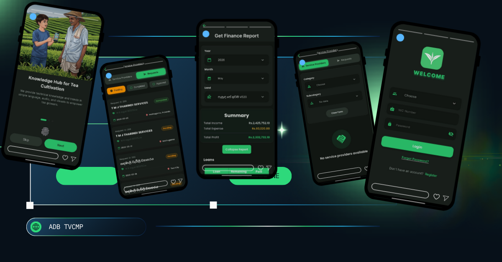
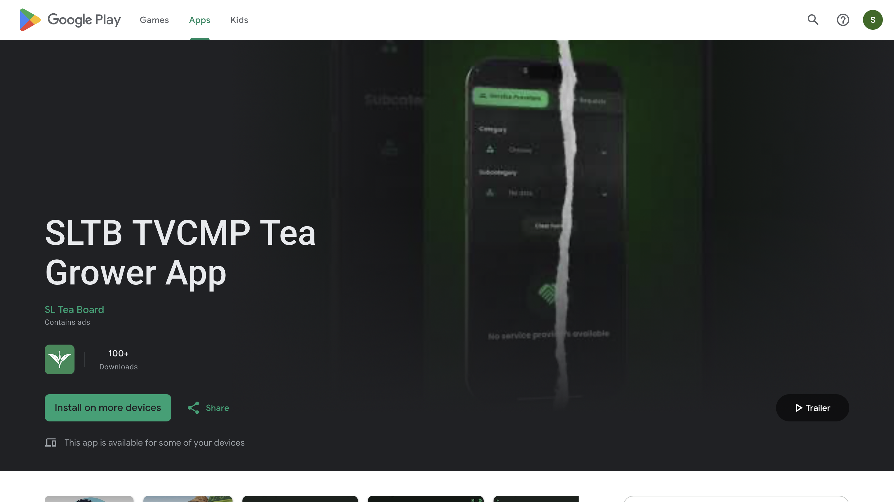
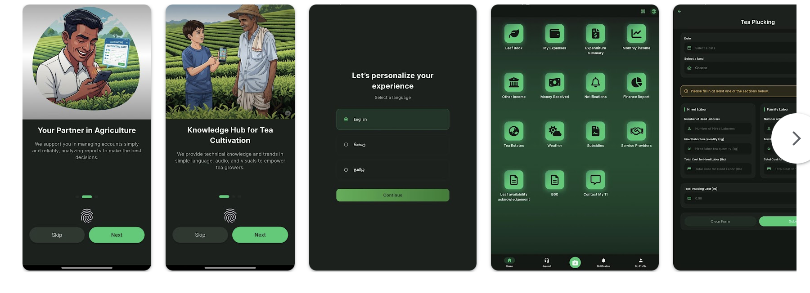
A national mobile platform for Sri Lanka's tea industry, replacing paper ledgers with a unified app for growers, dealers, collectors, factories, tea inspectors, and service providers. Built with ADB, KPMG, and the Sri Lanka Tea Board.
Ninety-nine percent of users are rural with very low technical literacy. Ninety percent use the app in tea fields under harsh sunlight with dirty hands. The interface had to be visible, simple, and forgiving — not an air-conditioned office experience.
Stakeholder meetings with TSHDA, understanding user personas, constraints, and cultural context.
Used AI to generate initial wireframes to overcome blank canvas syndrome, then refined based on user context.
Created over 50 interactive prototypes in Figma for stakeholder validation and early testing.
Early satisfaction wasn't high with SLTB — redesigned and delivered the current version based on real feedback.
Implemented the UI in Flutter — my first Flutter project, but delivered quality work.
Stakeholder collaboration
Results
I took on front-end development in Flutter for this project — a framework I had never used before. This pushed me to learn quickly, collaborate with the development team, and deliver quality work beyond my design scope.
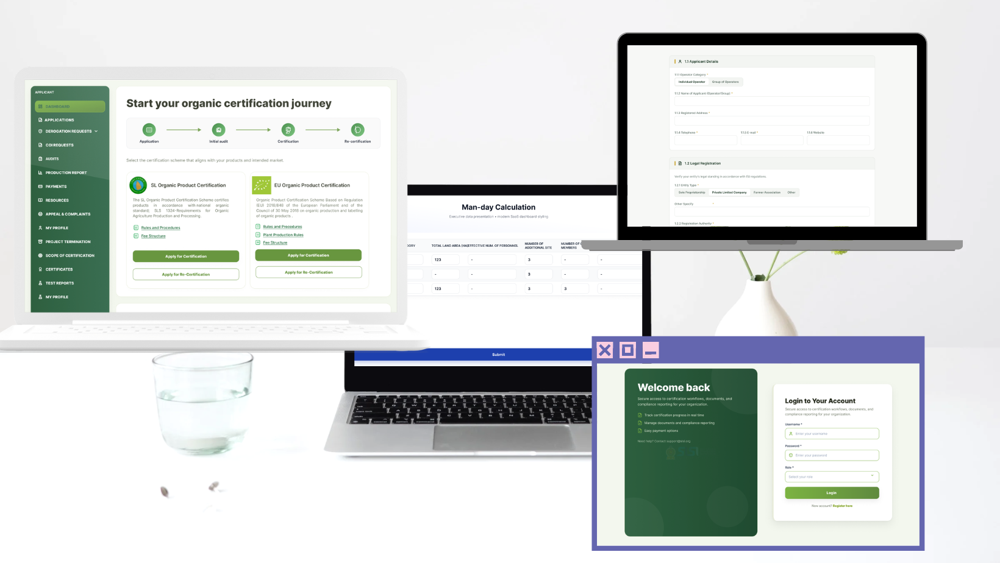
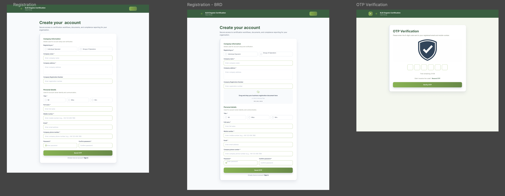
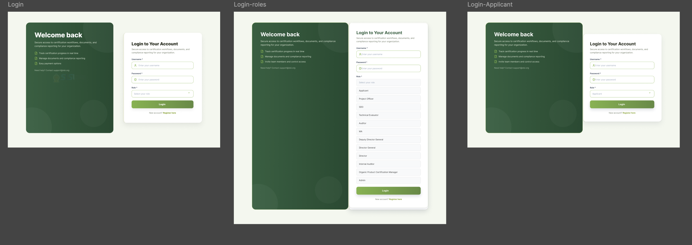
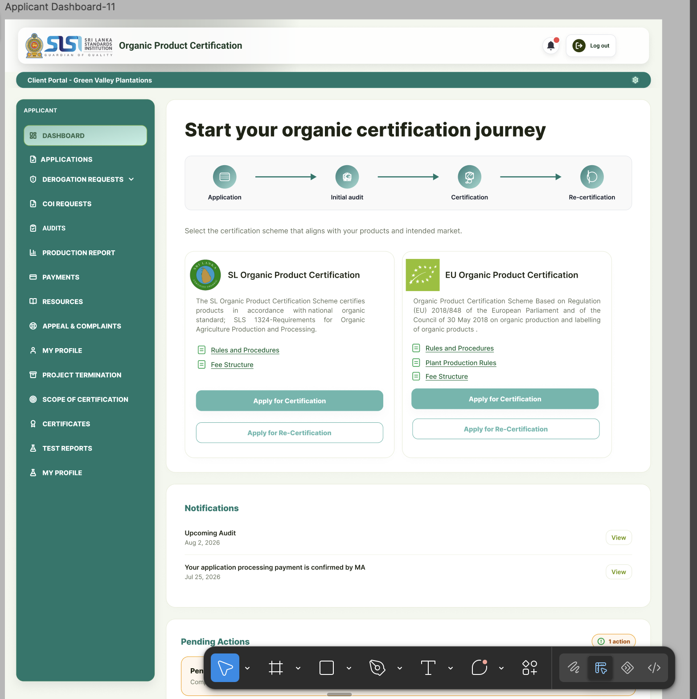
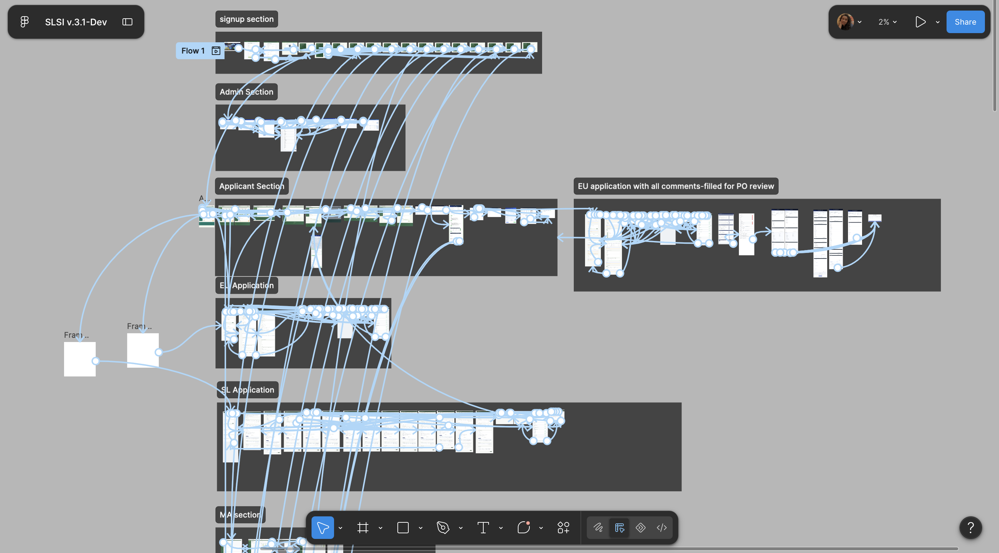
An end-to-end certification management platform for the Sri Lanka Standards Institution. It manages organic product certification across 12 internal roles — from application to audit to final certification — supporting both Sri Lankan and EU organic standards.
Multiple very long applications and a complex rollback system — if any role rejects the certification, it must roll back through the entire workflow for resolution. The system must pass through all roles, each with different responsibilities and approvals.
Conducted in-depth interviews with all 12 roles to document their responsibilities, pain points, and needs.
Mapped the entire 150+ screen certification process — from application submission to final certificate issuance.
Designed role-specific dashboards — simple for applicants, comprehensive for executive-level roles.
Built a reusable component library with consistent typography (Roboto), green and white color palette, and design tokens.
Designed the complex rollback mechanism — if any role rejects, the application returns through the workflow for resolution.
End-to-end process
Rollback: If any role rejects, the application rolls back through the workflow for resolution.
Stakeholder collaboration
Progress and challenges
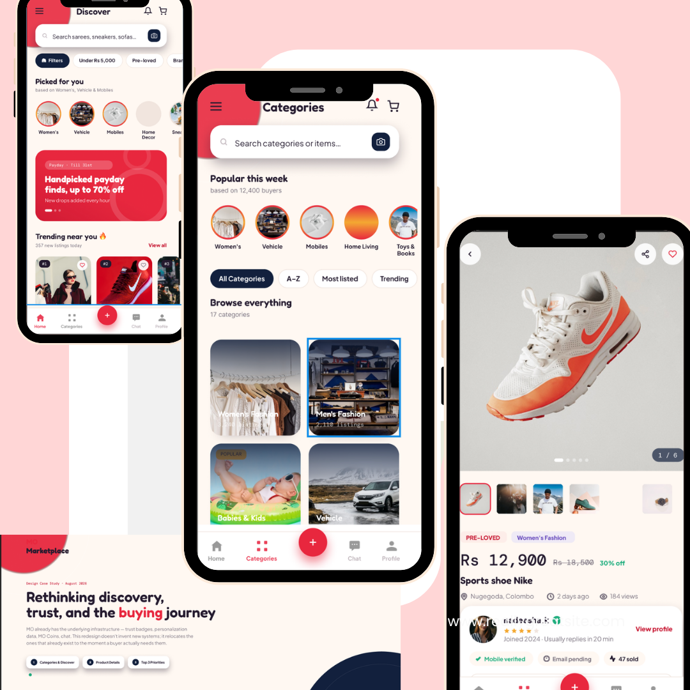
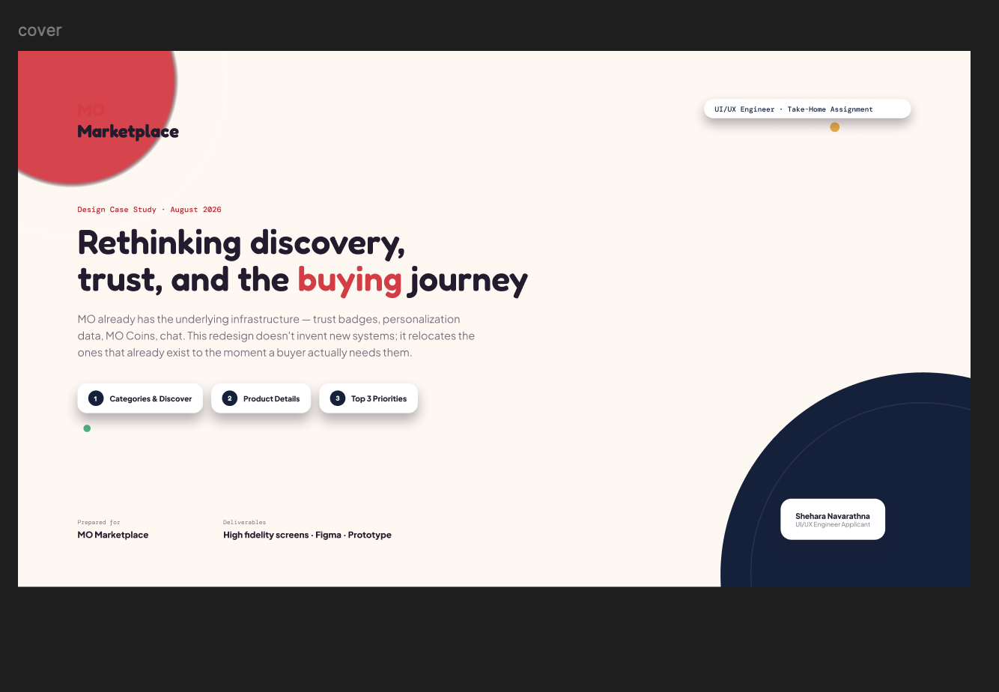
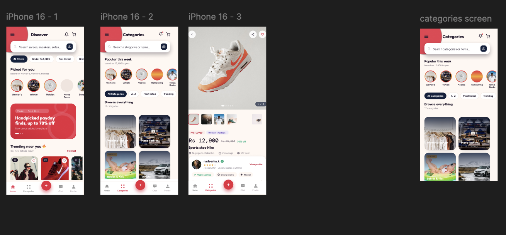
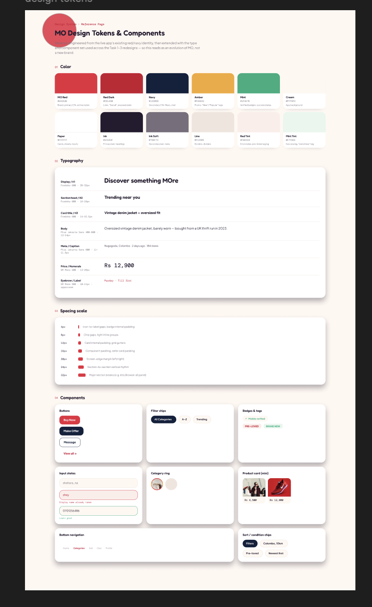
A self-directed redesign of a Sri Lankan marketplace app. The goal wasn't to invent new features, but to reorganize existing ones — trust badges, personalisation, and chat — to the moment a buyer actually needs them.
I felt the existing MO interface lacked visual-first browsing — discovery wasn't engaging enough. I wanted to explore how visual merchandising, collections, and trust signals could create a more compelling shopping experience.
I explored these apps to understand best practices:
Analyzed the existing MO app to identify friction points in discovery, category browsing, and product detail flows.
Created a token system — color, typography, spacing, shadows — based on MO's existing brand identity.
Built reusable components: buttons, filter chips, badges, category rings, product cards.
Redesigned discovery, category browsing, and product detail flows with visual-first principles.
Built a fully interactive Figma prototype to test the new experience.
Discovery
Visual-first browsing with trending collections and personalized recommendations
Trust badges
Relocated to the moment buyers need them — product detail and checkout
Chat
Moved inline with product browsing for instant seller connection
Visual merchandising
Category rings, curated collections, and inspirational layouts
This project reinforced my belief that good design isn't about adding features — it's about reorganizing what exists into something more intuitive. It also deepened my understanding of design tokens and component-based design, which I've applied in my professional work at CICRA.
I'm a UI/UX Engineer at CICRA Solutions, reading for a B.Sc. (Hons) in IT at SLIIT. I design systems in Figma, then build them in React, Angular, Tailwind, and Flutter — bridging design and development seamlessly.
Certification
Google UX Design
2026
Certification
Foundations of UX
Microsoft · 2024
Certification
AWS Cloud Foundations
AWS · 2024